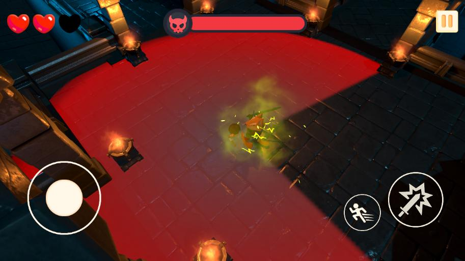

PROJECT 2025 · BOOTCAMP
냉장고 던전
던전을 공략해 세계 평화를 지키면서, 직장 생활로 일상의 평화도 지켜야 하는 3D 어드벤처입니다. 멋쟁이사자처럼 Unity 부트캠프 팀 프로젝트로, 처음으로 대화 시스템을 만들었고 엔딩 3종 판정과 출력, 체력·평판·시간 관리, 오디오도 맡았습니다.
Unity 2022.3.60fURPC#JSON
프로젝트 개요
| 장르 | 3D 어드벤처 |
|---|---|
| 플랫폼 | PC |
| 기간 | 2025.04 – 2025.05 (5주) |
| 팀 구성 | 7인 (개발 7) |
| 소속 | 멋쟁이사자처럼 Unity 부트캠프 |
담당 범위
| 기능 | 담당 | 확인 위치 |
|---|---|---|
| 게임 시스템: 체력·평판·시간 관리, 멀티 엔딩 분기, 오디오 | 공동 (약 25%) · 게임 시스템 파트를 팀원과 나눠 맡았고, 왼쪽 기능은 직접 구현 | 사례 1 · 플레이 영상 |
| 대화 시스템 | 주 담당 (100%) | 사례 2 |
| 코드 리뷰와 통합 | 참여 | — |
1. 평판과 날짜로 갈리는 엔딩 3종
두 가지 조건을 지켜야 하는 게임이라, 어느 조건에 실패했는지에 따라 엔딩을 나눴습니다. 팀이 함께 정한 엔딩 조건을 바탕으로 판정 로직과 엔딩별 대화 출력을 구현했습니다.
| 조건 | 엔딩 |
|---|---|
| 기한 안에 보스 클리어 + 평판 유지 | 해피 엔딩 |
| 평판 유지 실패 | 퇴사 엔딩 |
| 기한 안에 보스 클리어 실패 | 세계 멸망 엔딩 |
- 판정 시점: 평판 수치가 모두 깎이는 즉시, 또는 기한이 끝나는 즉시 엔딩으로 넘어갑니다.
- 출력: 엔딩마다 대화의 시작 id를 다르게 지정해, 같은 대화 시스템으로 엔딩별 대사를 출력합니다.
2. 첫 대화 시스템
JSON 대화 데이터를 불러와 순서대로 출력하는 구조로 만들었습니다. NPC 1명, 단일 흐름 대화입니다.
Dialogue.json노드: id · 대사 · 다음 id
로드
시작 idNPC 대화 / 엔딩 3종
→
DialogueMgr시작 id부터 다음 id를 따라
대사 순서 구성시작 id: NPC 대화 / 엔딩 3종
대사 순서 구성시작 id: NPC 대화 / 엔딩 3종
대사 목록 전달
ChatWinCtrl큐(Queue)에 담아
순서대로 하나씩 꺼내 출력
순서대로 하나씩 꺼내 출력
표시
대화창 UI최종 표시
회고
노드 id와 다음 id로 대사를 잇는 구조는 이때 만들었지만, 선택지나 조건에 따라 대화를 나눌 수 없었습니다. 그래서 네온 루트에서는 선택지·플래그·조건을 넣어 다시 설계했습니다.